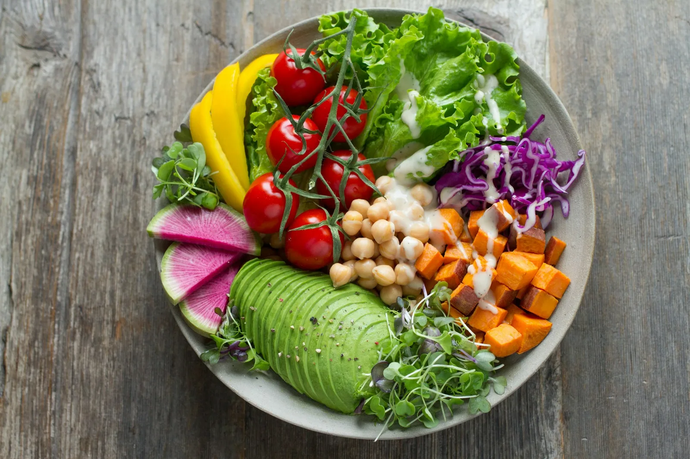
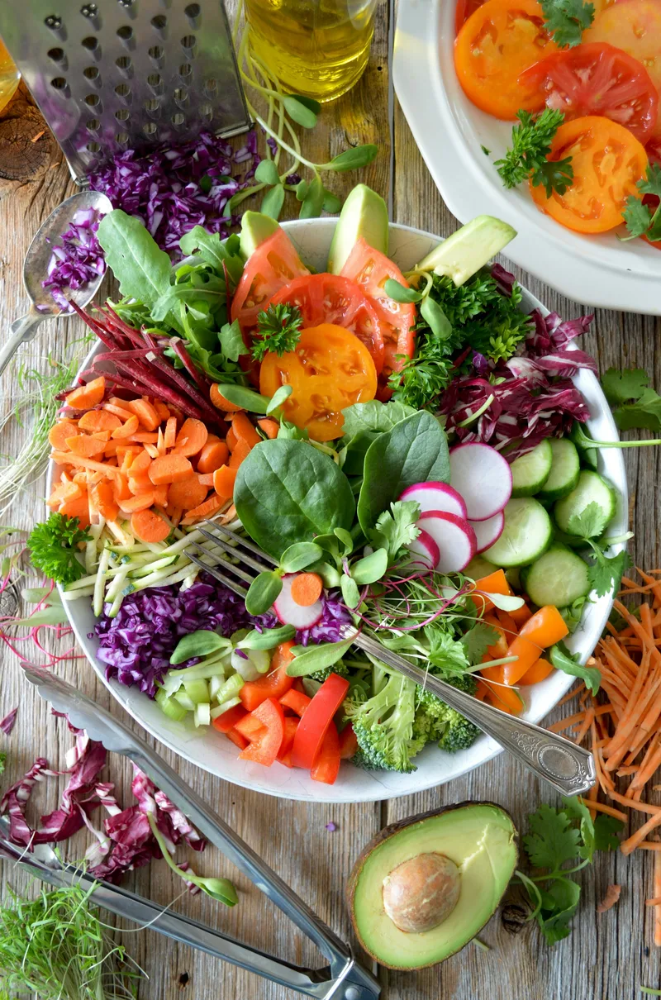
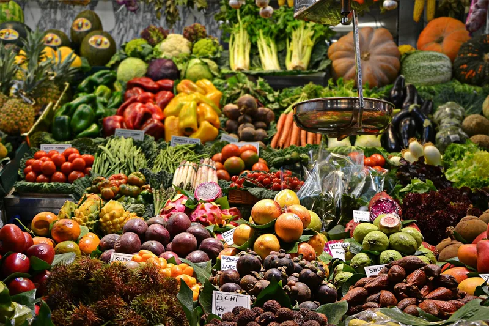
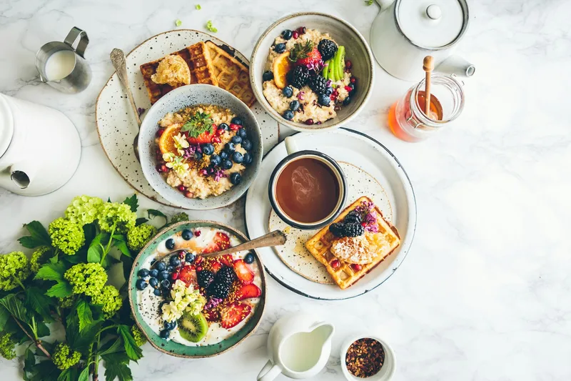
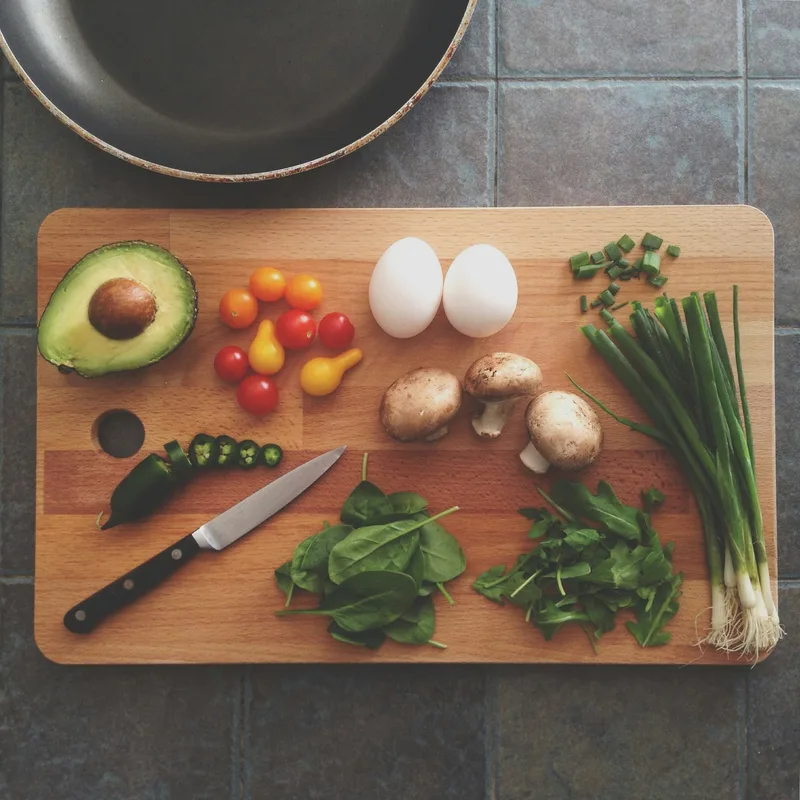
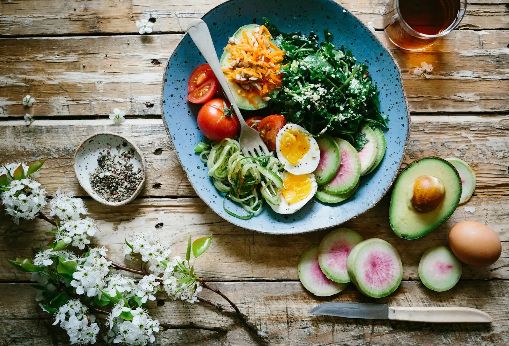

Handmade, oven-cooked
Everything made by hand — nothing reheated, nothing generic.
Vegetarian & vegan · The Mill Courtyard, Bowral
A hidden gem in Bowral where everything is made by hand, most dishes can be made vegan, and the host knows your order — and your name.





4.9 ★173 Google reviews
HandmadeOven-cooked, from scratch
Vegan friendlyMost dishes can be made vegan
Coeliac awareCareful gluten-free preparation

Our story
You’ll find Veggie Nook inside The Mill Courtyard in Bowral, just across from the bustle of Bong Bong Street. It’s a vegetarian and vegan food stall, not a big restaurant — plenty of seating, a vibrant room, and a host who goes out of her way for guests.
One reviewer tells of craving corn ribs and watching the owner go out to get fresh corn just to make them. That’s the kind of place this is: food made fresh, recommendations given honestly, and vegan treats around Bowral pointed out on the way out.
“Decided to go here because of the amazing reviews! Well deserved — food was amazing and fresh.” — Varshini V, Google review
Why locals choose Veggie Nook
Everything made by hand — nothing reheated, nothing generic.
Katrina recommends dishes, finds you the best seat, and even points you to vegan treats around town.
Found by chance, returned to on purpose — visitors come back for a second visit.
Vegetarian, vegan and gluten-free guests all eat well here, with coeliac-aware care.
“Great choices, everything handmade, oven cooked. We loved the burger and the nachos, they are highly recommended.” — Vipul L, Google review
From the kitchen & the courtyard
Eating with us
All but one of the options can be made vegan, reviewers note — and the owner takes extra care with gluten-free requests, so coeliac guests can order with confidence.
Tell the counter what you need. Recommendations are honest, portions are generous, and the food is made fresh.
Plan your visit
| Thursday | 10am – 5pm |
| Friday | 10am – 8pm |
| Saturday | 10am – 8pm |
| Sunday | 10am – 4pm |
| Monday – Wednesday | Closed |
Hours as listed by ThreeBestRated. Visit during off-peak hours if you can — it’s popular.
Questions
Yes — Veggie Nook is a vegetarian and vegan food stall, with most dishes also available vegan.
Yes — guests praise the careful, coeliac-aware preparation, and the Nacho Bowl and Polenta Chips are gluten-free favourites.
Inside The Mill Courtyard at 10f/210–224 Bong Bong Street, Bowral NSW 2576.
Thursday 10am–5pm, Friday and Saturday 10am–8pm, Sunday 10am–4pm. Closed Monday to Wednesday.
Check the blackboard out the front — it carries the menu of the day.
Get in touch
Questions about the menu, dietary needs or a visit? Send a message — or call 0433 811 987 during opening hours.